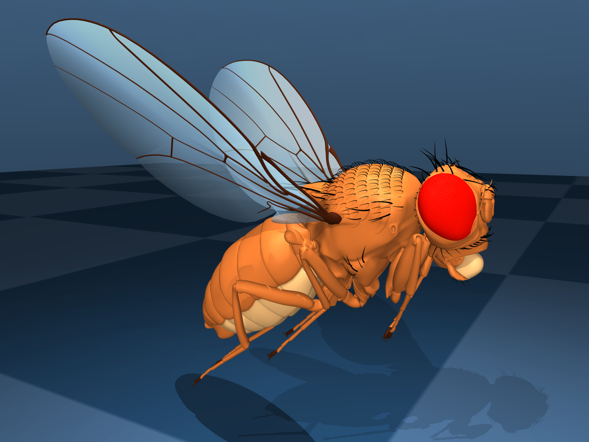
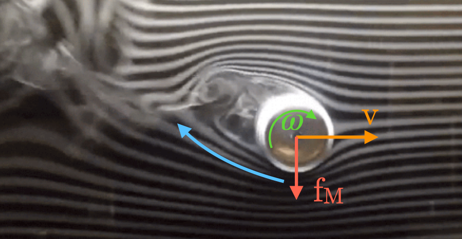
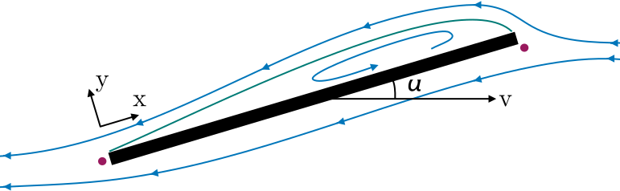
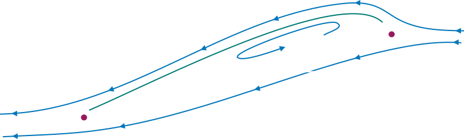

Fluid forces#
Proper simulation of fluid dynamics is beyond the scope of MuJoCo, and would be too slow for the applications we aim to facilitate. Nevertheless we provide two phenomenological models which are sufficient for simulating behaviors such as flying and swimming. These models are stateless, in the sense that no additional states are assigned to the surrounding fluid, yet are able to capture the salient features of rigid bodies moving through a fluid medium.
Both models are enabled by setting the density and viscosity attributes to positive values. These parameters correspond to the density \(\rho\) and viscosity \(\beta\) of the medium.
The Inertia-based model, uses only viscosity and density, inferring geometry from body equivalent-inertia boxes.
The Ellipsoid-based model is more elaborate, using an ellipsoid approximation of geoms. In addition to the global viscosity and density of the medium, this model exposes 5 tunable parameters per interacting geom.
Tip
As detailed in the Numerical Integration section, implicit integration significantly improves
simulation stability in the presence of velocity-dependent forces. Both of the fluid-force models described below
exhibit this property, so the implicit or implicitfast intergrators are
recommended when using fluid forces. The required analytic derivatives for both models are fully implemented.
Inertia model#
In this model the shape of each body, for fluid dynamics purposes, is assumed to be the equivalent inertia box, which can also be visualized. For a body with mass \(\mathcal{M}\) and inertia matrix \(\mathcal{I}\), the half-dimensions (i.e. half-width, half-depth and half-height) of the equivalent inertia box are
Let \(\mathbf{v}\) and \(\boldsymbol{\omega}\) denote the linear and angular body velocity of the body in the body-local frame (aligned with the equivalent inertia box). The force \(\mathbf{f}_{\text{inertia}}\) and torque \(\mathbf{g}_{\text{inertia}}\) exerted by the fluid onto the solid are the sum of the terms
Here subscripts \(D\) and \(V\) denote quadratic Drag and Viscous resistance.
The quadratic drag terms depend on the density \(\rho\) of the fluid, scale quadratically with the velocity of the body, and are a valid approximation of the fluid forces at high Reynolds numbers. The torque is obtained by integrating the force resulting from the rotation over the surface area. The \(i\)-th component of the force and torque can be written as
The viscous resistance terms depend on the fluid viscosity \(\beta\), scale linearly with the body velocity, and approximate the fluid forces at low Reynolds numbers. Note that viscosity can be used independent of density to make the simulation more damped. We use the formulas for the equivalent sphere with radius \(r_{eq} = (r_x + r_y + r_z) / 3\) at low Reynolds numbers. The resulting 3D force and torque in local body coordinates are
One can also affect these forces by specifying a non-zero wind, which is a 3D vector subtracted from the body linear velocity in the fluid dynamics computation.
Ellipsoid model#

The flight-capable Drosophila Melanogaster model in this figure is described in Vaxenburg et al. [VSM+24].#
In this section we describe and derive a stateless model of the forces exerted onto a moving rigid body by the surrounding fluid, based on an ellipsoidal approximation of geom shape. This model provides finer-grained control of the different types of fluid forces than the inertia-based model of the previous section. The motivating use-case for this model is insect flight, see figure on the right.
Summary#
The model is activated per-geom by setting the fluidshape attribute to ellipsoid, which
also disables the inertia-based model for the parent body. The
5 numbers in the fluidcoef attribute correspond to the following semantics
Index |
Description |
Symbol |
Default |
|---|---|---|---|
0 |
Blunt drag coefficient |
\(C_{D, \text{blunt}}\) |
0.5 |
1 |
Slender drag coefficient |
\(C_{D, \text{slender}}\) |
0.25 |
2 |
Angular drag coefficient |
\(C_{D, \text{angular}}\) |
1.5 |
3 |
Kutta lift coefficient |
\(C_K\) |
1.0 |
4 |
Magnus lift coefficient |
\(C_M\) |
1.0 |
Elements of the model are a generalization of Andersen et al. [APW05b] to 3 dimensions. The force \(\mathbf{f}_{\text{ellipsoid}}\) and torque \(\mathbf{g}_{\text{ellipsoid}}\) exerted by the fluid onto the solid are the sum of the terms
Where subscripts \(A\), \(D\), \(M\), \(K\) and \(V\) denote Added mass, viscous Drag, Magnus lift, Kutta lift and Viscous resistance, respectively. The \(D\), \(M\) and \(K\) terms are scaled by the respective \(C_D\), \(C_M\) and \(C_K\) coefficients above, the viscous resistance scales with the fluid viscosity \(\beta\), while the added mass term cannot be scaled.
Notation#
We describe the motion of the object in an inviscid, incompressible quiescent fluid of density \(\rho\). The arbitrarily-shaped object is described in the model as the equivalent ellipsoid of semi-axes \(\mathbf{r} = \{r_x, r_y, r_z\}\). The problem is described in a reference frame aligned with the sides of the ellipsoid and moving with it. The body has velocity \(\mathbf{v} = \{v_x, v_y, v_z\}\) and angular velocity \(\boldsymbol{\omega} = \{\omega_x, \omega_y, \omega_z\}\). We will also use
The Reynolds number is the ratio between inertial and viscous forces within a flow and is defined as \(Re=u~l/\beta\), where \(\beta\) is the kinematic viscosity of the fluid, \(u\) is the characteristic speed of the flow (or, by change of frame, the speed of the body), and \(l\) is a characteristic size of the flow or the body.
We will use \(\Gamma\) to denote circulation, which is the line integral of the velocity field around a closed curve \(\Gamma = \oint \mathbf{v} \cdot \textrm{d} \mathbf{l}\) and, due to Stokes’ Theorem, \(\Gamma = \int_S \nabla \times \mathbf{v} \cdot \textrm{d}\mathbf{s}\). In fluid dynamics notation the symbol \(\boldsymbol{\omega}\) is often used for the vorticity, defined as \(\nabla \times \mathbf{v}\), rather than the angular velocity. For a rigid-body motion, the vorticity is twice the angular velocity.
Finally, we use the subscripts \(i, j, k\) to denote triplets of equations that apply symmetrically to \(x, y, z\). For example \(a_i = b_j + b_k\) is shorthand for the 3 equations
Ellipsoid projection#
We present the following result.
Lemma
Given an ellipsoid with semi-axes \((r_x, r_y, r_z)\) aligned with the coordinate axes \((x, y, z)\), and a unit vector \(\mathbf{u} = (u_x, u_y, u_z)\), the area projected by the ellipsoid onto the plane normal to \(\mathbf{u}\) is
Added mass#
For a body moving in a fluid, added mass or virtual mass measures the inertia of the fluid that is moved due to the body’s motion. It can be derived from potential flow theory (i.e. it is present also for inviscid flows).
Following Chapter 5 of Lamb [Lam32], the forces \(\mathbf{f}_{V}\) and torques \(\mathbf{g}_{V}\) exerted onto a moving body due to generation of motion in the fluid from rest can be written as:
where \(\mathcal{T}\) is the kinetic energy of the fluid alone. These forces are often described as added or virtual mass because they are due to the inertia of the fluid that is to moved or deflected by the accelerating body. In fact, for a body with constant linear velocity these forces reduce to zero. We consider the body as having three planes of symmetry because under this assumption the kinetic energy greatly simplifies and can be written as:
For convenience we introduce the added-mass vector \(\mathbf{m}_A = \{m_{A, x}, m_{A, y}, m_{A, z}\}\) and added-moment of inertia vector \(\mathbf{I}_A = \{I_{A, x}, I_{A, y}, I_{A, z}\}\). Each of these quantities should estimate the inertia of the moved fluid due the motion of the body in the corresponding direction and can be derived from potential flow theory for some simple geometries.
For a body with three planes of symmetry, we can write in compact form the forces and torques due to added inertia:
Here \(\circ\) denotes an element-wise product, \(\dot{\mathbf{v}}\) is the linear acceleration and \(\dot{\boldsymbol{\omega}}\) is the angular acceleration. \(\mathbf{m}_A \circ \mathbf{v}\) and \(\mathbf{I}_A \circ \boldsymbol{\omega}\) are the virtual linear and angular momentum respectively.
For an ellipsoid of semi-axis \(\mathbf{r} = \{r_x, r_y, r_z\}\) and volume \(V = 4 \pi r_x r_y r_z / 3\), the virtual inertia coefficients were derived by Tuckerman [Tuc25]. Let:
It should be noted that these coefficients are non-dimensional (i.e. if all semi-axes are multiplied by the same scalar the coefficients remain the same). The virtual masses of the ellipsoid are:
And the virtual moments of inertia are:
Viscous drag#
The drag force acts to oppose the motion of the body relative to the surrounding flow. We found that viscous forces serve also to reduce the stiffness of the equations of motion extended with the fluid dynamic terms. For this reason, we opted to err on the conservative side and chose approximations of the viscous terms that may overestimate dissipation.
Despite being ultimately caused by viscous dissipation, for high Reynolds numbers the drag is independent of the viscosity and scales with the second power of the velocity. It can be written as:
Where \(C_D\) is a drag coefficient, and \(A_D\) is a reference surface area (e.g. a measure of the projected area on the plane normal to the flow), and \(I_D\) a reference moment of inertia.
Even for simple shapes, the terms \(C_D\), \(A_D\) and \(I_D\) need to be tuned to the problem-specific physics and dynamical scales [DHD15]. For example, the drag coefficient \(C_D\) generally decreases with increasing Reynolds numbers, and a single reference area \(A_D\) may not be sufficient to account for the skin drag for highly irregular or slender bodies. For example, experimental fits are derived from problems ranging from falling playing cards [APW05a, APW05b, WBD04] to particle transport [BB16, Lot08]. See screen capture of the cards.xml model on the right.
We derive a formula for \(\mathbf{f}_\text{D}\) based on two surfaces \(A^\text{proj}_\mathbf{v}\) and \(A_\text{max}\). The first, \(A^\text{proj}_\mathbf{v}\), is the cylindrical projection of the body onto a plane normal to the velocity \(\mathbf{v}\). The second is the maximum projected surface \(A_\text{max} = \pi r_{max} r_{mid}\).
The formula and derivation for \(A^\text{proj}_\mathbf{v}\) is given in the lemma above.
We propose an analogous model for the angular drag. For each Cartesian axis we consider the moment of inertia of the maximum swept ellipsoid obtained by the rotation of the body around the axis. The resulting diagonal entries of the moment of inertia are:
Given this reference moment of inertia, the angular drag torque is computed as:
Here \(\mathbf{I}_\text{max}\) is a vector with each entry equal to the maximal component of \(\mathbf{I}_D\).
Finally the viscous resistance terms, also known as linear drag, well approvimate the fluid forces for Reynolds numbers around or below \(O(10)\). These are computed for the equivalent sphere with Stokes’ law [Lam32, Sto50]:
Here, \(r_D = (r_x + r_y + r_z)/3\) is the radius of the equivalent sphere and \(\beta\) is the kinematic viscosity of the medium (e.g. \(1.48~\times 10^{-5}~m^2/s\) for ambient-temperature air and \(0.89 \times 10^{-4}~m^2/s\) for water). To make a quantitative example, Stokes’ law become accurate for room-temperature air if \(u\cdot l \lesssim 2 \times 10^{-4}~m^2/s\), where \(u\) is the speed and \(l\) a characteristic length of the body.
Viscous lift#
The Kutta-Joukowski theorem calculates the lift \(L\) of a two-dimensional body translating in a uniform flow with
speed u as \(L = \rho u \Gamma\). Here, \(\Gamma\) is the circulation around the body. In the next
subsections we define two sources of circulation and the resulting lift forces.
Magnus force#

Smoke flow visualization of the flow past a rotating cylinder (WikiMedia Commons, CC BY-SA 4.0). Due to viscosity, the rotating cylinder deflects the incoming flow upward and receives a downwards force (red arrow).#
The Magnus effect describes the motion of a rotating object moving through a fluid. Through viscous effects, a spinning object induces rotation in the surrounding fluid. This rotation deflects the trajectory of the fluid past the object (i.e. it causes linear acceleration), and the object receives an equal an opposite reaction. For a cylinder, the Magnus force per unit length of the cylinder can be computed as \(F_\text{M} / L = \rho v \Gamma\), where \(\Gamma\) is the circulation of the flow caused by the rotation and \(v\) the velocity of the object. We estimate this force for an arbitrary body as:
where \(V\) is the volume of the body and \(C_M\) is a coefficient for the force, typically set to 1.
It’s worth making an example. To reduce the number of variables, suppose a body rotating in only one direction, e.g. \(\boldsymbol{\omega} = \{0, 0, \omega_z\}\), translating along the other two, e.g. \(\mathbf{v} = \{v_x, v_y, 0\}\). The sum of the force due to added mass and the force due to the Magnus effect along, for example, \(x\) is:
Note that the two terms have opposite signs.
Kutta condition#
A stagnation point is a location in the flow field where the velocity is zero. For a body moving in a flow (in 2D, in the frame moving with the body) there are two stagnation points: in the front, where the stream-lines separate to either sides of the body, and in the rear, where they reconnect. A moving body with a sharp trailing (rear) edge will generate in the surrounding flow a circulation of sufficient strength to hold the rear stagnation point at the trailing edge. This is the Kutta condition, a fluid dynamic phenomenon that can be observed for solid bodies with sharp corners, such as slender bodies or the trailing edges of airfoils.


Sketch of the Kutta condition. Blue lines are streamlines and the two magenta points are the stagnation points. The dividing streamline, which connects the two stagnation points, is marked in green. The dividing streamline and the body inscribe an area where the flow is said to be “separated” and recirculates within. This circulation produces an upward force acting on the plate.#
For a two-dimensional flow sketched in the figure above, the circulation due to the Kutta condition can be estimated as: \(\Gamma_\text{K} = C_K ~ r_x ~ \| \mathbf{v}\| ~ \sin(2\alpha)\), where \(C_K\) is a lift coefficient, and \(\alpha\) is the angle between the velocity vector and its projection onto the surface. The lift force per unit length can be computed with the Kutta–Joukowski theorem as \(\mathbf{f}_K / L = \rho \Gamma_\text{K} \times \mathbf{v}\).
In order to extend the lift force equation to three-dimensional motions, we consider the normal \(\mathbf{n}_{s, \mathbf{v}} = \{\frac{r_y r_z}{r_x}v_x, \frac{r_z r_x}{r_y}v_y, \frac{r_x r_y}{r_z}v_z\}\) to the cross-section of the body which generates the body’s projection \(A^\text{proj}_\mathbf{v}\) onto a plane normal to the velocity given in the lemma above and the corresponding unit vector \(\hat{\mathbf{n}}_{s, \mathbf{v}}\). We use this direction to decompose \(\mathbf{v} = \mathbf{v}_\parallel ~+~ \mathbf{v}_\perp\) with \(\mathbf{v}_\perp = \left(\mathbf{v} \cdot \hat{\mathbf{n}}_{s, \mathbf{v}}\right) \hat{\mathbf{n}}_{s, \mathbf{v}}\). We write the lift force as:
Here, \(\hat{\mathbf{v}}\) is the unit-normal along \(\mathbf{v}\). Note that the direction of \(\hat{\mathbf{n}}_{s, \mathbf{v}}\) differs from \(\hat{\mathbf{v}}\) only on the planes where the semi-axes of the body are unequal. So for example, for spherical bodies \(\hat{\mathbf{n}}_{s, \mathbf{v}} \equiv \hat{\mathbf{v}}\) and by construction \(\mathbf{f}_\text{K} = 0\).
Let’s unpack the relation with an example. Suppose a body with \(r_x = r_y\) and \(r_z \ll r_x\). Note that the vector \(\hat{\mathbf{n}}_{s, \mathbf{v}} \times \hat{\mathbf{v}}\) gives the direction of the circulation induced by the deflection of the flow by the solid body. Along \(z\), the circulation will be proportional to \(\frac{r_y r_z}{r_x}v_x v_y - \frac{r_z r_x}{r_y}v_x v_y = 0\) (due to \(r_x = r_y\)). Therefore, on the plane where the solid is blunt, the motion produces no circulation.
Now, for simplicity, let \(v_x = 0\). In this case also the circulation along \(y\), proportional to \(\frac{r_y r_z}{r_x}v_x v_z - \frac{r_y r_x}{r_y}v_x v_z\), is zero. The only non-zero component of the circulation will be along \(x\) and be proportional to \(\left(\frac{r_x r_z}{r_y} - \frac{r_x r_y}{r_z}\right) v_y v_z \approx \frac{r_x^2}{r_z} v_y v_z\).
We would have \(\mathbf{v}_\parallel = \{v_x, 0, v_z\}\) and \(\Gamma \propto \{r_z v_y v_z, ~ 0,~ - r_x v_x v_y \} / \|\mathbf{v}\|\). The motion produces no circulation on the plane where the solid is blunt, and on the other two planes the circulation is \(\Gamma \propto r_\Gamma ~ \|\mathbf{v}\|~ \sin(2 \alpha) ~ = ~2 r_\Gamma ~\|\mathbf{v}\| ~\sin(\alpha)~\cos(\alpha)\) with \(\alpha\) the angle between the velocity and its projection on the body on the plane (e.g. on the plane orthogonal to \(x\) we have \(\sin(\alpha) = v_y/\|\mathbf{v}\|\) and \(\cos(\alpha) = v_z/\|\mathbf{v}\|\)), and \(r_\Gamma\), the lift surface on the plane (e.g. \(r_z\) for the plane orthogonal to \(x\)). Furthermore, the direction of the circulation is given by the cross product (because the solid boundary “rotates” the incoming flow velocity towards its projection on the body).
Acknowledgements#
The design and implementation of the model in this section are the work of Guido Novati.
References#
A Andersen, U Pesavento, and Z Jane Wang. Unsteady aerodynamics of fluttering and tumbling plates. Journal of Fluid Mechanics, 541:65–90, 2005.
Anders Andersen, Umberto Pesavento, and Z Jane Wang. Analysis of transitions between fluttering, tumbling and steady descent of falling cards. Journal of Fluid Mechanics, 541:91–104, 2005.
Gholamhossein Bagheri and Costanza Bonadonna. On the drag of freely falling non-spherical particles. Powder Technology, 301:526–544, 2016.
Zhipeng Duan, Boshu He, and Yuanyuan Duan. Sphere drag and heat transfer. Scientific reports, 5(1):1–7, 2015.
E Loth. Drag of non-spherical solid particles of regular and irregular shape. Powder Technology, 182(3):342–353, 2008.
GG Stokes. On the effect of internal friction of fluids on the motion of pendulums. Trans. Camb. phi1. S0c, 9(8):106, 1850.
LB Tuckerman. Inertia factors of ellipsoids for use in airship design. US Government Printing Office, 1925.
Roman Vaxenburg, Igor Siwanowicz, Josh Merel, Alice A Robie, Carmen Morrow, Guido Novati, Zinovia Stefanidi, Gwyneth M Card, Michael B Reiser, Matthew M Botvinick, Kristin M Branson, Yuval Tassa, and Srinivas C Turaga. Whole-body simulation of realistic fruit fly locomotion with deep reinforcement learning. bioRxiv, 2024. doi:10.1101/2024.03.11.584515.
Z Jane Wang, James M Birch, and Michael H Dickinson. Unsteady forces and flows in low reynolds number hovering flight: two-dimensional computations vs robotic wing experiments. Journal of Experimental Biology, 207(3):449–460, 2004.